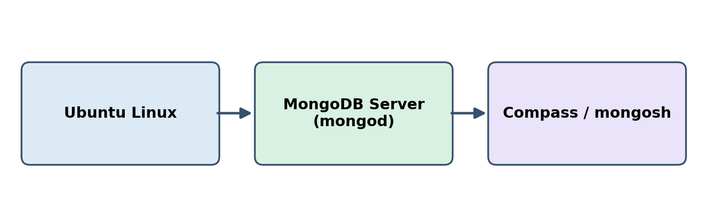
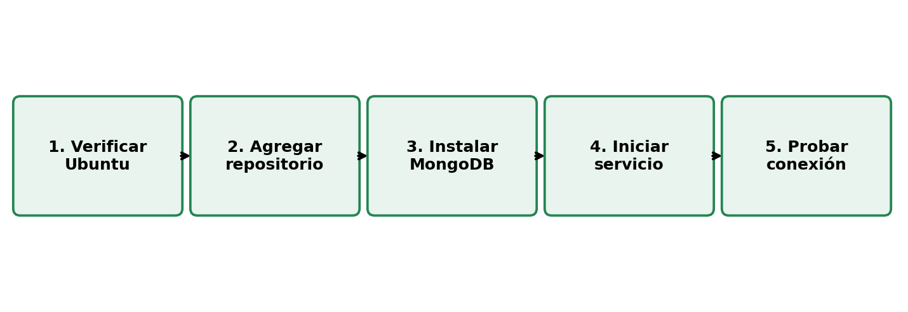
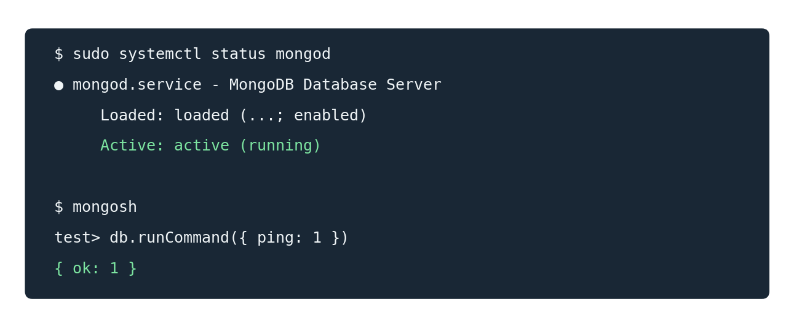

MongoDB en Ubuntu
Guía académica para estudiantes principiantes.
MANUAL DE INSTALACIÓN Y CONFIGURACIÓN DE MONGODB EN UBUNTU
Base de datos NoSQL · Guía para estudiantes principiantes

Figura 1. Componentes básicos del entorno MongoDB.
Modalidad: práctica guiada en Linux Ubuntu
Versiones de referencia: Ubuntu 22.04 / 24.04 LTS y MongoDB 8.0
Fecha de elaboración: noviembre de 2026
Autor: material de apoyo académico
-
Introducción
-
Objetivo, propósito y alcance
-
Requisitos previos
-
Conceptos esenciales
-
Método A: instalación mediante comandos APT
-
Método B: interfaz gráfica MongoDB Compass
-
Método C: ejecución alternativa con Docker
-
Práctica: crear y consultar una base de datos
-
Errores frecuentes y soluciones
-
Seguridad y buenas prácticas
-
Lista de verificación
-
Conclusión y referencias
Nota: los títulos están configurados como encabezados de Word para facilitar la navegación y la creación de una tabla de contenido automática.
Introducción
Una base de datos NoSQL permite guardar información sin exigir que todos los registros tengan las mismas columnas. MongoDB es una base de datos documental: almacena documentos similares a JSON en colecciones. Este manual enseña a instalar un servidor local en Ubuntu, conectarse y realizar operaciones básicas.
Objetivo, propósito y alcance
Objetivo: instalar y verificar MongoDB Community Edition en un equipo Ubuntu y ejecutar una práctica inicial de inserción y consulta.
Propósito: ofrecer instrucciones reproducibles, explicadas paso a paso, para estudiantes con conocimientos básicos de bases de datos.
Alcance: equipos de laboratorio o aprendizaje con Ubuntu 22.04/24.04 LTS de 64 bits, conexión a Internet y permisos sudo. No cubre despliegues de producción, clústeres ni acceso público desde Internet.
Requisitos previos
- Ubuntu 22.04 LTS (jammy) o 24.04 LTS (noble), 64 bits; arquitectura compatible con la versión elegida.
- Usuario con permisos sudo, acceso a terminal y conexión estable a Internet.
- Recomendación para laboratorio: al menos 4 GB de RAM, 2 GB de espacio libre y capacidad adicional para datos (no son mínimos oficiales).
- Para Compass: entorno de escritorio gráfico y navegador web. Para Docker: Docker Engine instalado y funcionando.
- Guardar copia de seguridad si ya existe una instalación o datos de MongoDB.
Comprobar versión y arquitectura
La distribución debe indicar 22.04 o 24.04; la arquitectura habitual es x86_64 (amd64).
| lsb_release -a; uname -m |
|---|
Conceptos esenciales
mongod: proceso servidor que almacena datos. mongosh: consola interactiva para consultar y modificar datos. MongoDB Compass: aplicación gráfica para explorar bases y colecciones. APT: gestor de paquetes de Ubuntu. Docker: sistema para ejecutar MongoDB dentro de un contenedor.

Figura 2. Secuencia lógica de instalación y comprobación.
Método A: instalación mediante comandos APT
Método recomendado para aprender la instalación local. Los comandos siguientes utilizan el repositorio oficial de MongoDB 8.0. Ejecútalos en la terminal de Ubuntu, no dentro de mongosh.
Paso 1. Actualizar el índice de paquetes
Introduce la contraseña del usuario cuando Ubuntu la solicite; al escribirla no se muestran caracteres.
| sudo apt-get update |
|---|
Paso 2. Instalar herramientas necesarias
| sudo apt-get install -y gnupg curl |
|---|
Paso 3. Importar la clave de firma del repositorio
La clave permite verificar los paquetes descargados. No ignores errores de firma.
| curl -fsSL https://pgp.mongodb.com/server-8.0.asc | \; sudo gpg --dearmor -o /usr/share/keyrings/mongodb-server-8.0.gpg |
|---|
Paso 4. Registrar el repositorio oficial para Ubuntu 24.04
Si utilizas Ubuntu 22.04, usa el comando alternativo que aparece debajo; NO ejecutes ambos.
| echo "deb [ arch=amd64,arm64 signed-by=/usr/share/keyrings/mongodb-server-8.0.gpg ] https://repo.mongodb.org/apt/ubuntu noble/mongodb-org/8.0 multiverse" | sudo tee /etc/apt/sources.list.d/mongodb-org-8.0.list |
|---|
| echo "deb [ arch=amd64,arm64 signed-by=/usr/share/keyrings/mongodb-server-8.0.gpg ] https://repo.mongodb.org/apt/ubuntu jammy/mongodb-org/8.0 multiverse" | sudo tee /etc/apt/sources.list.d/mongodb-org-8.0.list |
|---|
Paso 5. Actualizar repositorios e instalar MongoDB
El paquete mongodb-org instala el servidor y los componentes oficiales, incluido mongosh según el empaquetado de MongoDB.
| sudo apt-get update; sudo apt-get install -y mongodb-org |
|---|
Paso 6. Iniciar el servicio y habilitar el arranque automático
| sudo systemctl start mongod; sudo systemctl enable mongod |
|---|
Paso 7. Comprobar que el servicio esté activo
Debe aparecer “active (running)”. Pulsa la tecla q para salir de la vista de estado.
| sudo systemctl status mongod |
|---|
Paso 8. Abrir la consola y comprobar conexión
La segunda línea se ejecuta dentro de mongosh. Debe responder con ok: 1. Para salir escribe exit.
| mongosh; db.runCommand({ ping: 1 }) |
|---|

Figura 3. Ejemplo ilustrativo de resultados correctos; no es una captura real.
Método B: interfaz gráfica MongoDB Compass
Compass no sustituye al servidor MongoDB: es una aplicación gráfica para conectarse a un servidor ya instalado (Método A) o remoto. Es la opción más sencilla para visualizar colecciones.
Paso 1. Descargar Compass
Desde Ubuntu abre la página oficial y selecciona la descarga .deb apropiada para tu sistema. Evita sitios de terceros.
| https://www.mongodb.com/try/download/compass |
|---|
Paso 2. Instalar el archivo .deb descargado
Abre la carpeta Descargas, haz doble clic sobre el paquete .deb y elige “Instalar” en el instalador de aplicaciones de Ubuntu. La interfaz puede cambiar según la versión.
Paso 3. Abrir Compass y establecer conexión
Busca “MongoDB Compass” en Aplicaciones. En el campo URI escribe mongodb://localhost:27017 y pulsa Connect. El servidor mongod debe estar iniciado.
Paso 4. Crear una base desde Compass
Selecciona Create Database. Nombre de base: instituto. Nombre de colección: estudiantes. Confirma y abre la colección para explorar sus documentos.
Alternativa gráfica: en algunos sistemas el archivo .deb se puede instalar desde el centro de software; si no se abre, usa el comando sudo apt install ./nombre-del-archivo.deb desde la carpeta donde está el archivo, sustituyendo el nombre real.
Método C: ejecución alternativa con Docker
Este método crea un servidor MongoDB aislado en un contenedor. Requiere Docker Engine previamente instalado; no es una instalación nativa de MongoDB en Ubuntu.
Paso 1. Confirmar Docker
Si Docker no está instalado, sigue la guía oficial de Docker Engine para Ubuntu: https://docs.docker.com/engine/install/ubuntu/
| docker --version; sudo docker info |
|---|
Paso 2. Descargar y ejecutar MongoDB 8.0
El volumen conserva los datos al eliminar el contenedor. La publicación 127.0.0.1 limita la conexión al equipo local.
| sudo docker volume create mongo_datos; sudo docker run -d --name mongo-aula -p 127.0.0.1:27017:27017 -v mongo_datos:/data/db mongo:8.0 |
|---|
Paso 3. Comprobar y acceder a mongosh
Para detener: sudo docker stop mongo-aula. Para volver a iniciar: sudo docker start mongo-aula. No ejecutes el contenedor a la vez que el servidor nativo en el mismo puerto 27017.
| sudo docker ps; sudo docker exec -it mongo-aula mongosh |
|---|
Práctica: crear y consultar una base de datos
Ejecuta estas instrucciones dentro de mongosh, ya sea con el Método A o el Método C.
Paso 1. Seleccionar la base de datos
La base se materializa cuando se guardan datos por primera vez.
| use instituto |
|---|
Paso 2. Insertar dos documentos
| db.estudiantes.insertMany([; { nombre: "Ana", programa: "Sistemas", semestre: 1 },; { nombre: "Luis", programa: "Sistemas", semestre: 2 }; ]) |
|---|
Paso 3. Consultar y filtrar
| db.estudiantes.find(); db.estudiantes.find({ semestre: 1 }) |
|---|
Paso 4. Actualizar y contar documentos
Resultado esperado del conteo: 2, si no se han insertado más registros.
| db.estudiantes.updateOne({ nombre: "Ana" }, { $set: { semestre: 2 } }); db.estudiantes.countDocuments({}) |
|---|
Paso 5. Verificar la base y salir
| show dbs; show collections; exit |
|---|
Errores frecuentes y soluciones
| Mensaje / síntoma | Causa probable | Acción recomendada |
|---|---|---|
| Unable to locate package mongodb-org | Repositorio incorrecto o apt sin actualizar. | Verifica noble/jammy y ejecuta sudo apt-get update. |
| NO_PUBKEY / repositorio no firmado | Falta la clave o no coincide. | Repite la importación GPG; revisa la ruta signed-by. |
| Unit mongod.service not found | Servicio no registrado o instalación incompleta. | sudo systemctl daemon-reload; confirma que mongodb-org esté instalado. |
| Connection refused 127.0.0.1:27017 | Servidor detenido o puerto incorrecto. | sudo systemctl status mongod; sudo systemctl start mongod. |
| Address already in use | El puerto 27017 está ocupado. | Detén el contenedor o servicio duplicado; no uses ambos simultáneamente. |
| Permission denied / fallo de arranque | Permisos de archivos o configuración. | Consulta sudo journalctl -u mongod -n 50; evita cambiar permisos a ciegas. |
| Conflicto de paquetes dpkg | Existe un paquete mongodb de Ubuntu incompatible. | Revisa apt list --installed | grep mongo; respalda datos antes de desinstalar. |
| Compass no conecta | URI incorrecta o servidor apagado. | Usa mongodb://localhost:27017 y verifica mongod o Docker. |
Para revisar registros del servicio:
| sudo journalctl -u mongod -n 50 --no-pager |
|---|
Seguridad y buenas prácticas
- Esta práctica es local. No expongas el puerto 27017 a Internet ni cambies bindIp a 0.0.0.0 sin diseñar autenticación, firewall y controles adecuados.
- En instalaciones de laboratorio locales, la autenticación puede no estar habilitada por defecto; no consideres seguro un servidor accesible desde otras máquinas.
- Utiliza únicamente repositorios y descargas oficiales; no ignores advertencias GPG.
- Evita sudo en mongosh para tareas normales; sudo se utiliza para administración del sistema.
- Antes de borrar paquetes, contenedores o volúmenes, realiza copia de seguridad de cualquier dato importante.
Lista de verificación
[ ] Identifiqué la versión de Ubuntu y su arquitectura.
[ ] Configuré el repositorio oficial correspondiente.
[ ] Instalé mongodb-org o ejecuté el contenedor Docker.
[ ] Confirmé que MongoDB está activo.
[ ] Me conecté con mongosh o Compass.
[ ] Inserté y consulté documentos de prueba.
[ ] Reconozco los errores comunes y las precauciones de seguridad.
Conclusión y referencias
Al terminar, el estudiante dispone de una base de datos MongoDB local y conoce cómo iniciarla, comprobarla y administrar documentos básicos. La instalación mediante APT facilita comprender el servicio; Compass aporta una vista gráfica; Docker permite practicar en un entorno aislado.
https://www.mongodb.com/docs/v8.0/tutorial/install-mongodb-on-ubuntu/
https://www.mongodb.com/docs/v8.0/reference/installation-ubuntu-community-troubleshooting/
https://www.mongodb.com/try/download/compass
https://www.mongodb.com/docs/manual/administration/community-packages/
https://docs.docker.com/engine/install/ubuntu/
Aviso: comandos e imágenes ilustrativas revisados para fines didácticos; las pantallas y paquetes disponibles pueden cambiar. Comprueba la documentación oficial antes de instalar en otros sistemas o versiones.